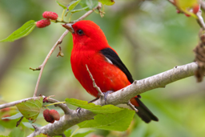
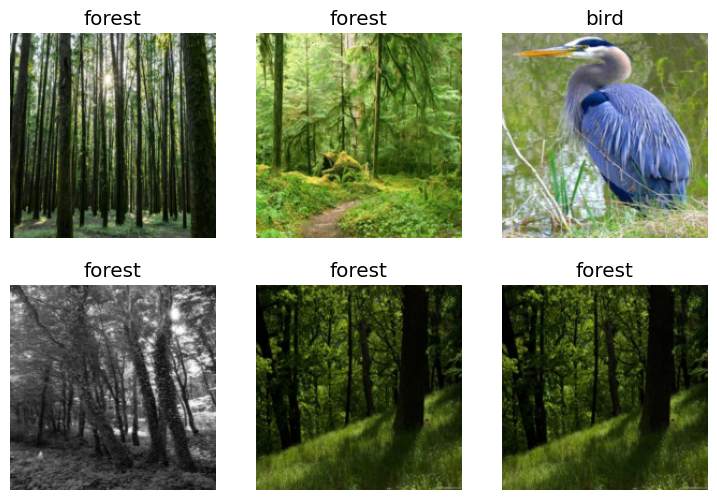

from fastcore.all import *
from fastbook import search_images_ddgdef search_images(term, max_images=30):
print(f"Searching for '{term}'")
return search_images_ddg(term, max_images)urls = search_images('bird photos', max_images=1)
urls[0]Searching for 'bird photos'
'https://chilternchatter.com/wp-content/uploads/2018/01/RED-Bird.jpg'Downloading image using the URL
from fastdownload import download_url
dest = 'bird.jpg'
download_url(urls[0], dest, show_progress=False)
from fastai.vision.all import *
im = Image.open(dest)
im.to_thumb(256,256)
# hidedownload_url(search_images('forest photos', max_images=1)[0], 'forest.jpg', show_progress=False)
Image.open('forest.jpg').to_thumb(256,256)Searching for 'forest photos'searches = 'forest', 'bird'
path = Path('bird_or_not')
from time import sleepfor o in searches:
dest = (path/o)
dest.mkdir(exist_ok=True, parents=True)
download_images(dest, urls=search_images(f'{o} photo'))
sleep(2)
download_images(dest, urls=search_images(f'{o} sun photo'))
sleep(1)
download_images(dest, urls=search_images(f'{o} shade photo'))
sleep(2)
resize_images(path/o, max_size=400, dest=path/o)Searching for 'forest photo'
Searching for 'forest sun photo'
Searching for 'forest shade photo'
Searching for 'bird photo'
Searching for 'bird sun photo'
Searching for 'bird shade photo'Step 2: Train our model
failed = verify_images(get_image_files(path))
failed.map(Path.unlink)
len(failed)6Using the DataLoaders
dls = DataBlock(
blocks=(ImageBlock, CategoryBlock),
get_items=get_image_files,
splitter=RandomSplitter(valid_pct=0.2, seed=42),
get_y=parent_label,
item_tfms=[Resize(192, method='squish')]
).dataloaders(path, bs=32)dls.show_batch(max_n=6)
learn = vision_learner(dls, resnet18, metrics=error_rate)
learn.fine_tune(3)Downloading: "https://download.pytorch.org/models/resnet18-f37072fd.pth" to /home/kirubel/.cache/torch/hub/checkpoints/resnet18-f37072fd.pth
100%|██████████| 44.7M/44.7M [00:01<00:00, 44.1MB/s]| epoch | train_loss | valid_loss | error_rate | time |
|---|---|---|---|---|
| 0 | 0.349523 | 0.017476 | 0.012903 | 00:42 |
| epoch | train_loss | valid_loss | error_rate | time |
|---|---|---|---|---|
| 0 | 0.055393 | 0.066558 | 0.012903 | 00:50 |
| 1 | 0.044839 | 0.027144 | 0.012903 | 00:52 |
| 2 | 0.026491 | 0.048613 | 0.012903 | 00:49 |
Step 3: Use our model (and build your own!)
is_bird,_,probs = learn.predict(PILImage.create('bird.jpg'))
print(f"This is a: {is_bird}.")
print(f"Probability it's a bird: {probs[0]:.4f}")This is a: bird.
Probability it's a bird: 1.0000